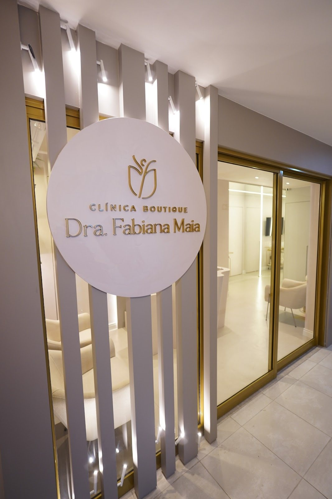
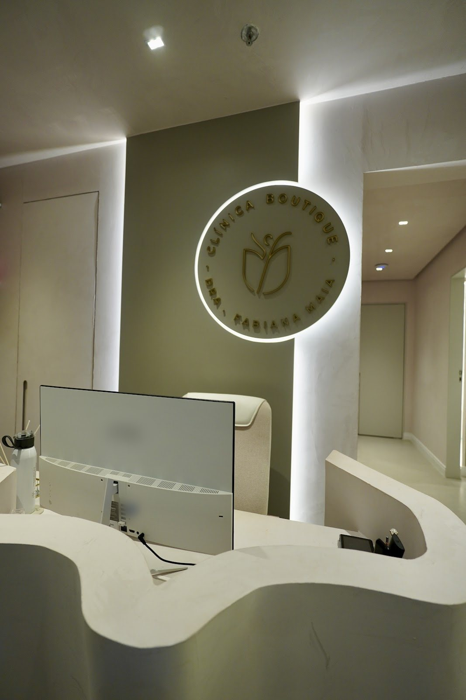
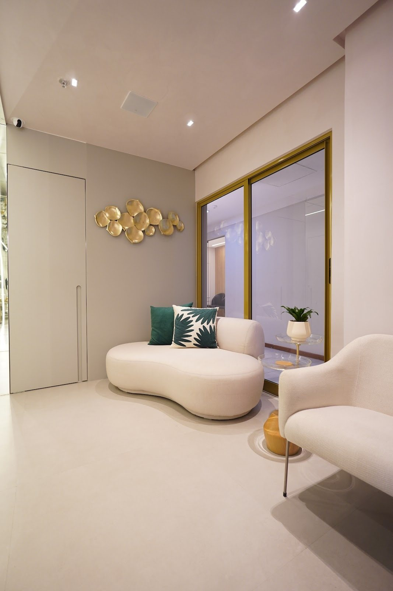
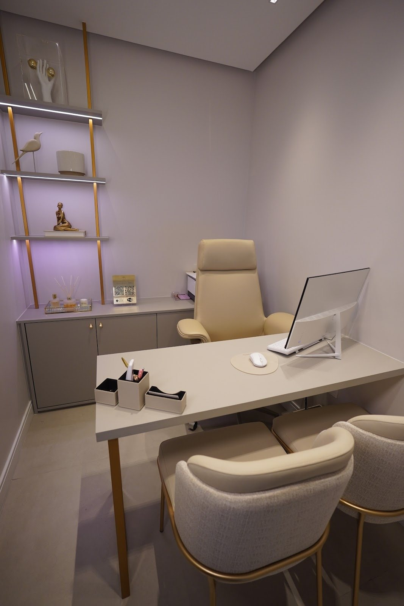

Início · A Clínica Boutique
A Clínica Boutique: “a casa é nossa”.
O consultório próprio da Dra. Fabiana fica no 4º andar do Edifício Premier, em Santa Mônica. Linho claro, metais dourados e luz suave: um espaço pensado para receber com calma.
A casa
Sofisticação e acolhimento
“A união entre sofisticação e acolhimento, o cuidado que toda mulher merece! Podem entrar, a casa é NOSSA”Dra. Fabiana Maia, na inauguração da clínica, no Instagram
A Clínica Boutique Dra. Fabiana Maia é a clínica própria da médica, registrada no Cadastro Nacional de Estabelecimentos de Saúde, onde ela atende como ginecologista.
Por dentro
Por dentro da clínica




Endereço
Endereço e mapa
Av. Getúlio Vargas, 2525 · Edifício Premier
4º andar, sala 412 · Santa Mônica
Feira de Santana – BA · 44077-015
Horário
Horário e agendamento
Horário da ficha da clínica no Google. O atendimento é com hora marcada: agende pelo WhatsApp (75) 99275-4433 e confirme o dia e o horário com a equipe.
Antes de sair
Para a sua visita
- Confirme o horário com a equipe pelo WhatsApp.
- Leve documento com foto, a lista de medicamentos e exames anteriores, se tiver.
- No Edifício Premier, suba ao 4º andar: a clínica fica na sala 412.
Dúvidas frequentes
Perguntas comuns
Qual é o endereço?
Av. Getúlio Vargas, 2525 · Edifício Premier, 4º andar, sala 412 · Santa Mônica, Feira de Santana – BA, 44077-015.
Como agendar?
Pelo WhatsApp (75) 99275-4433, o número de agendamento da clínica.
A clínica abre aos sábados?
Segundo a ficha da clínica no Google, o atendimento é de segunda a sexta-feira. Confirme com a equipe.
Vamos juntas?
Uma consulta com a Dra. Fabiana, na Clínica Boutique.
Edifício Premier, sala 412, Santa Mônica, Feira de Santana. Agende pelo WhatsApp e confirme o horário com a equipe.